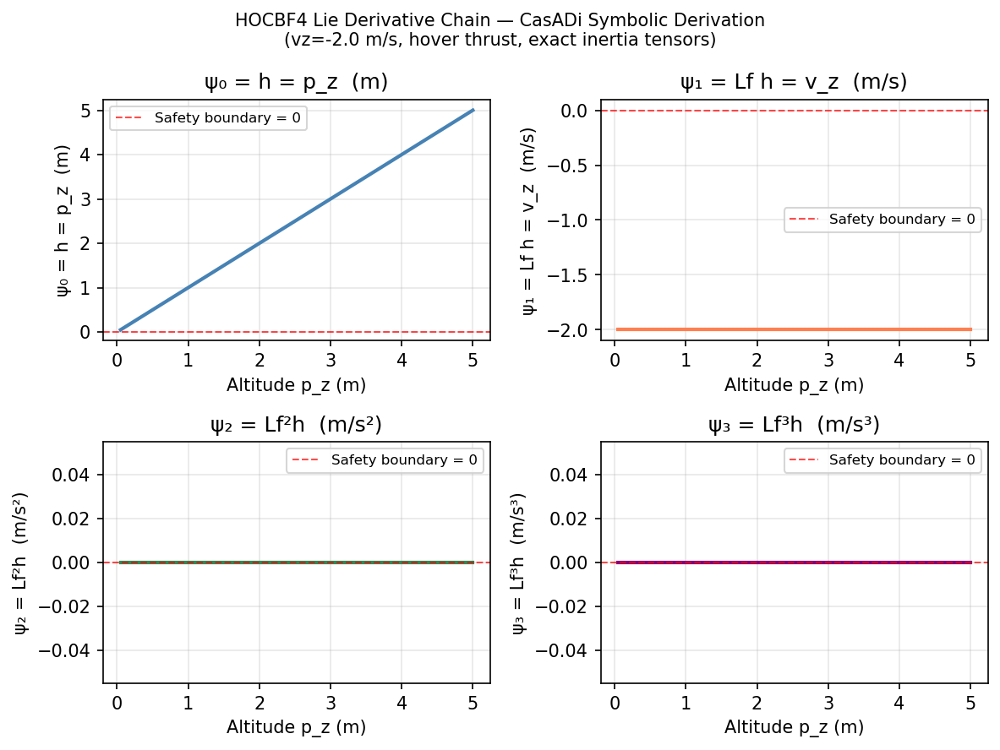
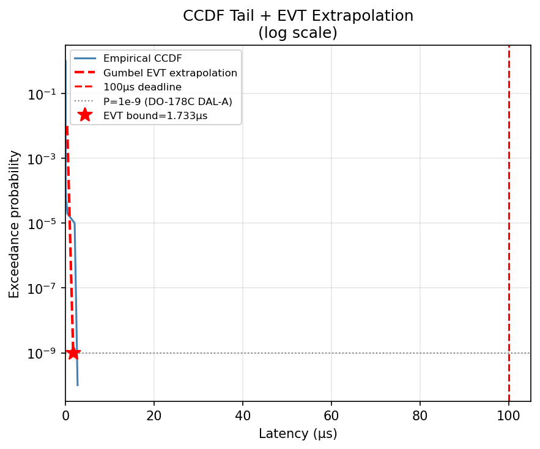
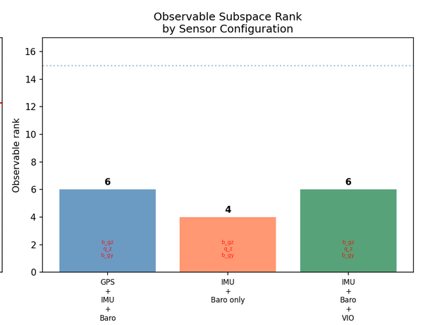
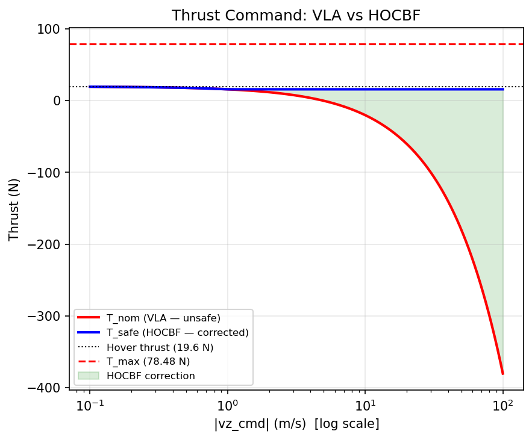
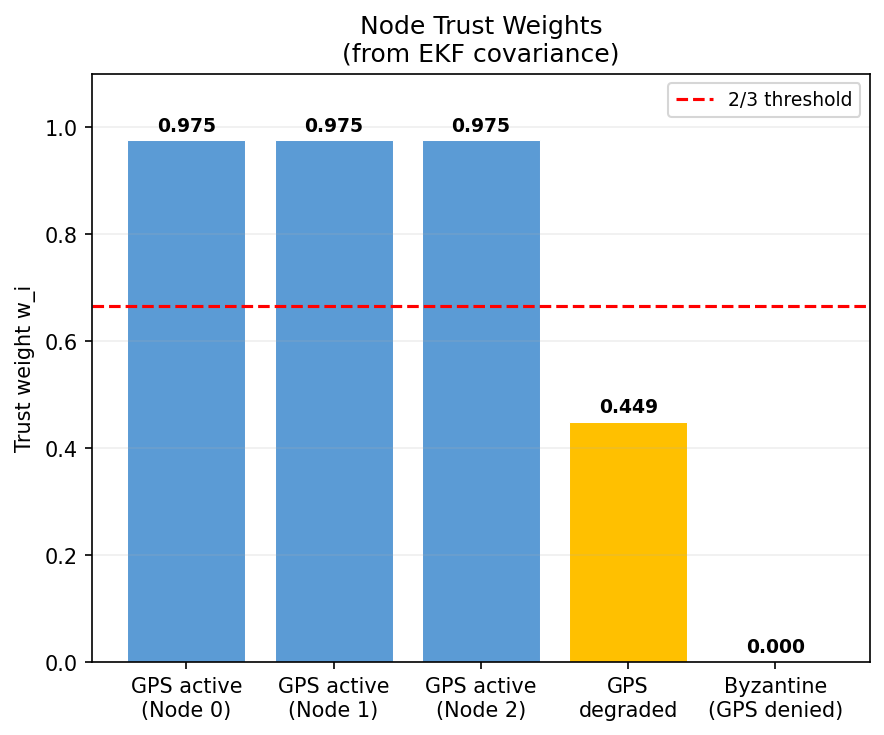
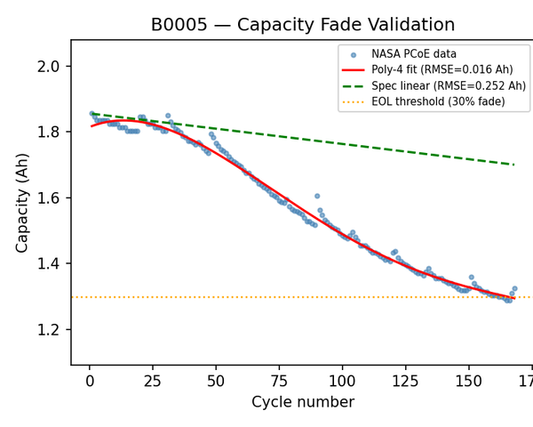

Safety constraint: h(x) = p_z ≥ 0 | Relative degree 2 (kinematic) and 4 (rigid-body)
| Boundary State | T_lb (N) | Margin | Result |
|---|---|---|---|
| Hover | 17.62 | 60.86N | PASS |
| Max descent vz=−5m/s | 27.62 | 50.86N | PASS |
| Near-ground + tilt | 50.28 | 28.20N | PASS |
| Worst-case combined | 78.48 | 0.00N | TIGHT |
T_max=78.48N. Control invariant set PROVED — feasible at all boundary states. Ref: Xiao & Belta (2022) IEEE TAC.

VIO σ_v=0.10 m/s (OpenVINS EuRoC). Air-gap: physics plant writes ground-truth [vx,vy] to /dev/shm/aisp_gt_state — EKF reads only.




| Cell | RMSE Poly-4 | EOL Actual→Spec |
|---|---|---|
| B0005 | 0.016 Ah | 165→600 |
| B0006 | 0.030 Ah | 100→600 |
| B0007 | 0.014 Ah | —→600 |
[1] Xiao & Belta (2022). High-Order CBFs. IEEE TAC.
[2] Ames et al. (2019). Control Barrier Functions. ECC.
[3] Geneva et al. (2020). OpenVINS. ICRA.
[4] Lee et al. (2010). Geometric Tracking SE(3). CDC.
[5] Yin et al. (2019). HotStuff BFT Consensus. PODC.
[6] Saha & Goebel (2007). NASA PCoE Battery Dataset.
[7] Krener & Ide (2009). Measures of Unobservability. CDC.
[8] Markovic et al. (2021). ES-EKF GPS-Denied. arXiv:2109.04908.
[9] Foughali & Zuepke (2022). Formal Verification RT Robots.
[10] Makoviychuk et al. (2021). Isaac Gym. NeurIPS.
[11] Burri et al. (2016). EuRoC MAV Datasets. IJRR.
[12] Tobin et al. (2017). Domain Randomization. IROS.
[13] Mahony et al. (2012). Multirotor Vehicles. IEEE RAM.
[14] Castro & Liskov (1999). Practical BFT. OSDI.